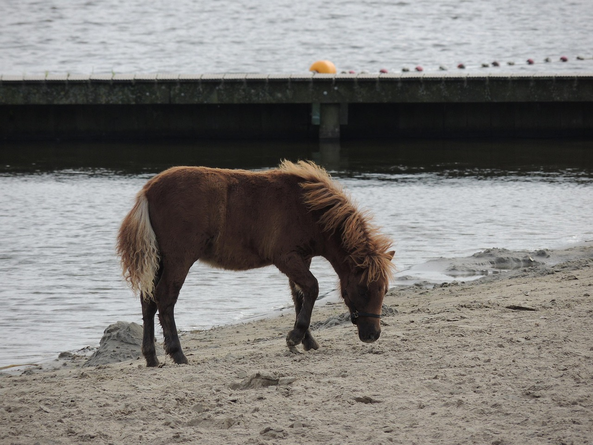
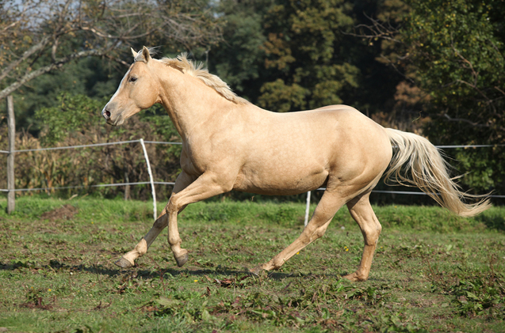
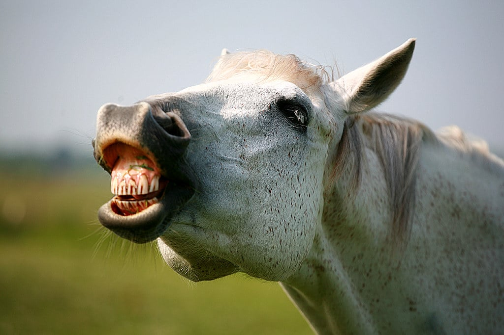

DicoPets, DicoChien et DicoChat


Équipement et anatomie · DicoCheval


Outils et profils · DicoCheval




Avatars des membres

La galerie complète de toutes les images utilisées dans DicoPets, DicoCheval, DicoChien et DicoChat.


